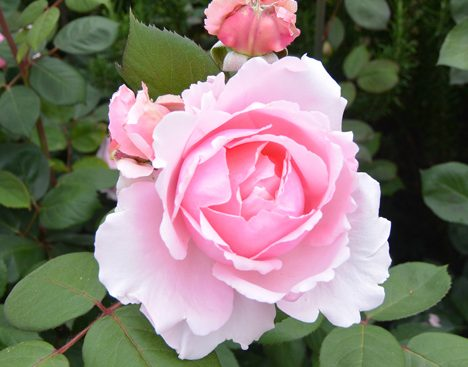

CABBAGE ROSE
| Harga | : | Rp 3.000.000/pot |
| Tinggi Bunga | : | 90cm |
| Berat | : | 1kg |
| Kode | : | B004 |

Penjelasan :
Diperkenalkan pertama kali oleh seorang pembudi daya mawar dari Belanda pada abad ke-17, mawar kubis merupakan mawar hibrida atau hasil persilangan. Bunga bernama latin Rosa centifolia ini memiliki ciri khas berupa mahkota yang besar dan bertumpuk seperti kubis. Mawar kubis tumbuh secara merambat sehingga bisa dijadikan tanaman pagar yang akan menambah keindahan halaman rumah. Agar tumbuh dengan baik, kamu harus menyiapkan penopang tanaman. Bunga mawar kubis akan mekar setiap musim semi atau musim panas. Mawar ini sangat disukai karena selain bentuk bunganya indah, harumnya juga sangat kuat. Sayangnya, budi daya mawar kubis tergolong rumit dibandingkan mawar biasa. Kembang ini membutuhkan tempat khusus untuk tumbuh dan mudah terserang penyakit atau hama.
We Accept